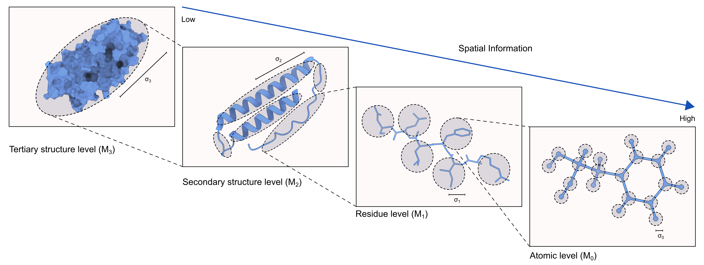

Software
We’re committed to free and open source software. Primarily, we use Python/Arduino/C to develop solutions to our experimental and analysis problems. Interested in collaborating? Please, get in touch!
Released
HARP

Hierarchical Atomic Resolution Perception (HARP) is software for assessing cryoEM model quality.
- Read the preprint: Scale-dependent hierarchical resolution: applications to atomic resolution and model validation in cryoEM
- Visit the HARP website
- See the code on GitHub
tMAVEN

time-series Modeling, Analysis, and Visualization ENvironment (tMAVEN) is software for post-processing, modeling, and generating publication quality figures for smFRET data. It was made in collaboration with the Gonzalez lab.
- Read the preprint: Increasing the accuracy of single-molecule data analysis using tMAVEN
- Visit the tMAVEN website
- See the code on GitHub
BIASD
Bayesian Inference for the Analysis of Sub-temporal-resolution Data (BIASD) is a method to temporally resolve the kinetics a single-molecule time series, even if those kintics are orders of magnitude faster than the time resolution of the technique.
- Read the first paper: Increasing the Time Resolution of Single-Molecule Experiments with Bayesian Inference
- Read the next paper: Entropic control of the free-energy landscape of an archetypal biomolecular machine
- See the code on GitHub
Under Development
qcquant

qcquant is software for the quantitative analysis of chemotaxis plate assays using the growth-expansion model.
- See the code on GitHub
removecysteines

removecysteines is software that uses a masked large language model (ESM2) to engineer out cysteine residues from protein sequences.
- See the code on GitHub
- Run the code on Google Colab.

highFRET

highfret is software for analyzing single-molecule fluorescence microscopy data; specially for two-color smFRET experiments. It is currently under development.
- See the code on GitHub